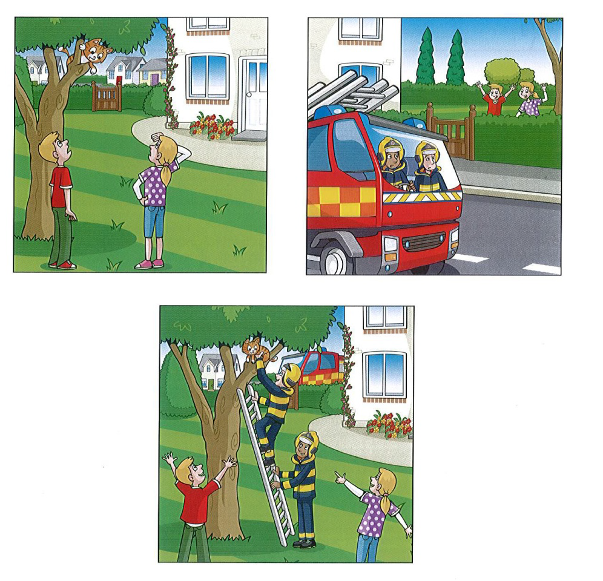

Thì quá khứ đơn · A2 · Learn → Practise → Tell the story
| Cấu trúc | Ví dụ | |
|---|---|---|
| Khẳng định (+) | S + V-ed / V2 (bất quy tắc) | She called the fire station. / He took the cat. |
| Phủ định (–) | S + didn't + V (nguyên mẫu) | They didn't call their mum. |
| Câu hỏi (?) | Did + S + V (nguyên mẫu)? | Did you see the cat? – Yes, I did. / No, I didn't. |
| Động từ be | was / were (không dùng did) | I was worried. They weren't at home. Were you scared? |
Sau did / didn't luôn dùng động từ nguyên mẫu (không thêm -ed): didn't play ✔ didn't played ✘
Quiz 1A ·
| Quy tắc | Ví dụ |
|---|---|
| Thông thường: + ed | play → played /pleɪd/ |
| Kết thúc bằng e: + d | decide /dɪˈsaɪd/ (quyết định) → decided |
| Phụ âm – nguyên âm – phụ âm, trọng âm ở âm cuối (hoặc từ 1 âm tiết): gấp đôi phụ âm cuối + ed | stop (ngưng) → stopped prefer /prɪˈfɜː/ (thích hơn) → preferred regret /rɪˈɡret/ (hối tiếc) → regretted |
| Phụ âm + y → ied | study → studied · try → tried |
| Nguyên âm + y: + ed (giữ y) | play → played · enjoy → enjoyed |
Quiz 1B ·
| V1 | V2 (quá khứ) | Nghĩa |
|---|---|---|
| teach /tiːtʃ/ | taught /tɔːt/ | dạy |
| take /teɪk/ | took /tʊk/ | lấy, cầm, đưa đi |
| read /riːd/ | read /red/ (viết giống, đọc khác!) | đọc |
| hear /hɪə(r)/ | heard /hɜːd/ | nghe thấy |
| think /θɪŋk/ | thought /θɔːt/ | nghĩ |
Quiz 1C ·
| Âm cuối của V1 | -ed đọc là | Ví dụ |
|---|---|---|
| /p/ /k/ /f/ /s/ /ʃ/ /tʃ/ (âm vô thanh) | /t/ | stopped, helped, watched, washed |
| /t/ hoặc /d/ | /ɪd/ | decided, wanted, needed |
| Các âm còn lại (nguyên âm + âm hữu thanh) | /d/ | played, called, lived |
Bấm 🔊 để nghe từ, rồi chọn cách đọc đuôi -ed.
Quiz 1D ·
Đọc câu tiếng Việt, tìm dấu hiệu thời gian và chọn thì đúng. Sau khi chọn, bạn sẽ thấy câu tiếng Anh mẫu.
Điểm ·
Lật thẻ mới → hệ thống kiểm tra bạn bằng một thẻ đã lật trước đó (ngẫu nhiên; thẻ sai nhiều sẽ xuất hiện nhiều hơn). Thẻ chưa lật sẽ không bị kiểm tra.

Đọc to bài viết của bạn (30–60 giây). Chú ý: was /wəz/ · were /wə/, đuôi -ed (/t/, /d/, /ɪd/) và trọng âm.
Bài của bạn được lưu trong trình duyệt này khi đang làm.